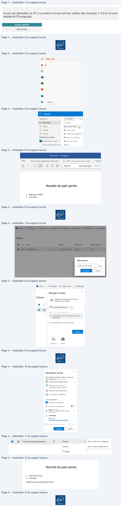
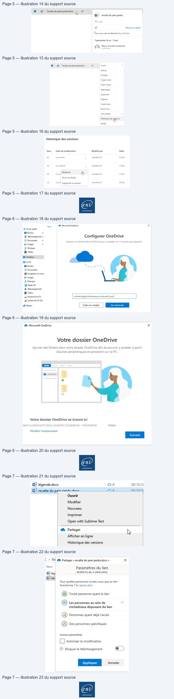

Transcription du document du Drive TSSR. La mise en forme est adaptée au Web ; les compléments IA du portail sont présentés séparément.
Page 1 Microsoft 365 - Outils
Utilisation de OneDrive
TP du Module 05 – Exploiter Teams, SharePoint et OneDrive dans un
Avant de démarrer ce TP, il convient d’avoir suivi les vidéos des modules 1 à 5 et d’avoir
Durée estimée
60 minutes
Solution
En fonction des informations qui vous ont été fournies, connectez-vous à la machine de
•
Connectez-vous avec votre compte de tenant puis ouvrez OneDrive Online.
Créez un fichier Word nommé « recette du pain perdu » :
o Titre centré : recette du pain perdu
o Contenu :
▪
▪
Utilisez une page en navigation privée pour ne pas interférer avec une autre connexion
Page 1/7
© ENI – Tous droits réservés
Page 2 Microsoft 365 - Outils
Cliquez su Nouveau
Créez le contenu du fichier.
Sélectionnez le fichier puis renommez-le.
Page 2/7
© ENI – Tous droits réservés
Texte relevé dans les illustrations Hi
@
micheline JP
DO Récents
©
Bibliothèques partagées
| | projet compta - compta ...
Créer une bibliothèque parta
Document
Aide
Ap + | Fav Gay € = Sv | Normal
Recette du pain perdu
1.
Page 3 Microsoft 365 - Outils
•
Envoyez-le avec le message : « voici la recette que tu m’avais demandée ».
Sélectionnez le fichier puis cliquez sur Partager. Indiquez votre adresse mail campus puis
Ensuite, cliquez sur « Toute personne disposant … », indiquez une date d’expiration et le mot
Page 3/7
© ENI – Tous droits réservés
Texte relevé dans les illustrations Renommer
Ouvrir Y
Envoyer un lien
Fichiers
|
© micheline@campus-enifr
est externe à votre
voici la recette quetu m'avais demandé
@
Copier le Ben
Env)
Page 4 Microsoft 365 - Outils
•
Fermez le fichier puis affichez l’activité sur votre fichier. Rouvrez-le et restaurez à la version
Ouvrez le fichier et sélectionnez « Ouvrir dans l’application ».
Ajoutez la phrase demandée.
Sélectionnez le message puis cliquez sur Afficher les détails.
Page 4/7
© ENI – Tous droits réservés
Texte relevé dans les illustrations à
Pour quelles personnes voulez-vous que ce
lien fonctionne ? En savoir plus
Toute personne ayant le lien
Les personnes au sein de
Personnes ayant déjà l'accès
Des personnes spécifiques
Autres paramètres
Autoriser la modification
À
tO
A
©
Appliquer
D
Aperçu
Partager
Recette du pain perdu
1.
2.
Attention, je ne parle pas de l'arbre.

Illustrations du support Drive — pages 1 à 4. Les images sont regroupées sans redimensionnement ; aucun contenu généré par IA. Page 5 Microsoft 365 - Outils
Sélectionnez le fichier puis cliquez sur les trois points et Historique des versions.
Cliquez sur Restaurer sur la version désirée puis vérifiez.
•
Allez dans l’explorateur Windows et cliquez sur le nuage bleu puis renseignez votre adresse
Page 5/7
© ENI – Tous droits réservés
Texte relevé dans les illustrations ©
1vue
a
st
1 personne l'a vu - 1 vue
Vous a consulté cet élément
©
Aperçu
Partager
Copier le lien
Gérer l'accès
Télécharger
Supprimer
Déplacer
Copier dans
Renommer
Automatiser
Historique desLo
Historique des versions
Vers.
40
30
Restaurer
Ouvrir le fichier
10
Page 6 Microsoft 365 - Outils
Créez un répertoire dans Documents puis changez l’emplacement.
C:\Users\votrenom\Documents\Onedrive - micheline
•
Allez dans l’Explorateur Windows et cliquez sur le nuage bleu puis faites un clic droit sur le
Page 6/7
© ENI – Tous droits réservés
Texte relevé dans les illustrations Nom
DM Bureau
BB Documents
BB Vidéos
© OneDrive
GB Cepc
I Bureau
BD Objets 30
FI Vidéos
@ Lecteur de CD (D)
% Microsoft OneDrive
Votre dossier OneDrive
Ajouter des fichiers dans votre dossier OneDrive afin de pouvoir y accéder a partir
d'autres périphériques et persistent sur ce PC.
|—|
@ ——
:
rad
Votre dossier OneDrive se trouve ici
linesa
Modifier l'emplacement
ent
Page 7 Microsoft 365 - Outils
Allez sur la gestion des liens, puis décochez « Autoriser la modification ».
D’autres solutions sont possibles pour ce TP. Il n’existe pas une seule façon de faire.
Page 7/7
© ENI – Tous droits réservés
Texte relevé dans les illustrations 15] légende.docx
Modifier
Nouveau
Imprimer
Open with Sublime Text
Historique des versions
©
Nom
dE leg}
di)rec|
Toute personne ayant le lien
Les personnes au sein de
Personnes ayant déjà l'accès
Des personnes spécifiques
Autres paramétres
CL] Autoriser la modification
[S) Bloquer le téléchargement
Appliquer
Gnd

Illustrations du support Drive — pages 5 à 7. Les images sont regroupées sans redimensionnement ; aucun contenu généré par IA.  Document Word
Document Word